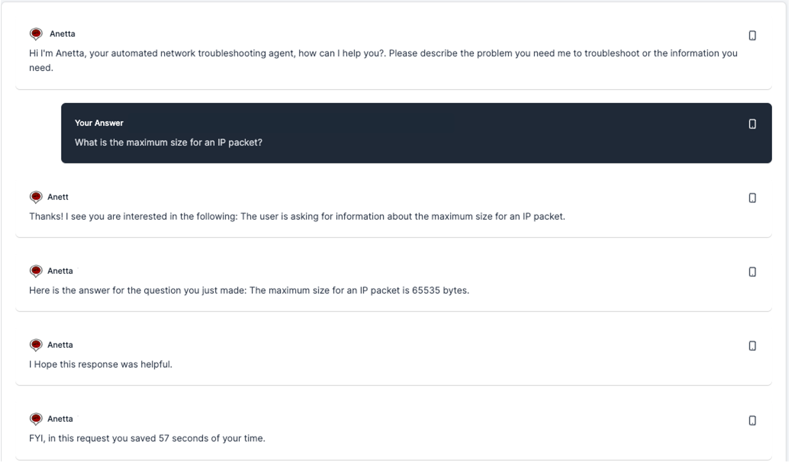

Welcome to Anetta Documentation
Release 1.0.0 - Sept 26th 2023
AI compiled knowledge at the service of network and cloud engineers
What is Anetta?
Anetta is an acronym that refers to: Autonomous network troubleshooting agent
It is autonomous because it has the ability to make its own decisions about how to accomplish a certain goal. It is about networks and clouds, it has the ability to interact with your network elements, servers, VMs, cloud systems or monitoring systems to achieve a specific outcome. One of the possible outcomes is to troubleshoot network problems, as you will see. Finally, it is an agent, it has the ability to run based on a specific intent, complex problem formulation or goal, and you can interact with it in plain english.
At this point, however, it is not just about the network, and it is neither only about troubleshooting, but both are fundamental components of it and it is how it all started, so I will keep the name for the time being.
What does "agent" mean in this context?
I am going to stay away from very very marketing oriented terms such as "network co-pilot" or "network GPT" or the likes.
Let's be specific and precise about terminology, so we all know what we are talking about:
- LLM: Large Language Model. A very large neural network trained with natural language with (usually) a very concrete objective: predict the most likely next word given a provided prompt. An LLM is a foundational building block for Anetta, as well as many other products at this point. An LLM, as such is completely "stateless", it has no memory about previous requests.

-
GPT: Generative Pre-trained Transformer. This is a type of LLM. There are other types. Examples of GPTs are OpenAI's GPT-3.5, GPT-4, Google's Palm2, Antrophic Claude 1 and 2, among others.
-
ChatGPT: This is not a LLM, this is an application that uses a LLM. You usually get the perception that ChatGPT has memory, because it "knows" about the previous questions you made. However, the underlying LLM is always stateless, so the application is taking care of that by always providing all the required information relative to your previous questions and answers, every time the LLM is prompted.
-
Agent: An agent is a somewhat autonomous entity capable to solve complex problems or achieve goals. There are multiple agent architectures already available. AutoGPT is one of them. Agents are complex systems intended to execute one or several tasks given a goal or "intent" provided by the user. Agents use LLMs where needed to accomplish the goal requested and usually have different mechanisms to keep memory. Anetta is an agent of this kind, but it is not based on any pre-existing agent architecture. It has been purpose built to address the use cases planned.
Therefore, Anetta is:
-
NOT a LLM. She uses LLMs where required to perform its mission.
-
NOT a GPT. She uses LLMs that are GPTs.
-
NOT a ChatGPT. She does not use ChatGPT nor is a ChatGPT like Application. She is an autonomous agent with strong reasoning and problem solving abilities.
-
an agent. Given a request, Anetta, as an autonomous agent, will figure out how to respond to the request, and if she succeeds, will provide a response back.
What can Anetta do?
Anetta can do multiple things for you. She is your new network operation partner which you can delegate or ask tasks. What type of tasks?
- You need certain information from one device. You can ask Anetta to find it for you.
- You need certain information from multiple devices, which may require a complex search given specific constraints. You can ask Anetta to find that information for you.
- You have a problem in the network and you need to find the root cause. You can ask Anetta to diagnose the problem for you.
- You have an action you need to execute and you need to plan how to do it. Some of those tasks may require multiple steps, including pre- and post-checks. You can ask Anetta to generate that detailed plan for you.
*Note: The rendering of action plans in the web UI do not look good (yet). That is why the capture here is from a CLI version.
- You have simply a technology, protocol related question. Anetta may give you quickly an answer to any such question.
LLMs supported
As of the first release, Anetta uses OpenAI's GPT-4 LLM. Tests with GPT-3.5 did not result into good enough results.
In order to run Anetta you need to have your own OpenAI's API Key which must be configured as part of the configuration file. See Anetta configuration section. If you do not have an API key from OpenAI, you will need to register in OpenAI and create an API Key here
Work is on-going to incorporate other LLM options such as Google's Palm2 and Antrophic Claude 2. We are evaluating as well the opportunity and need to customize and fine tune a model for our purposes.
Devices supported
Based on the experience with OpenAI's GPT-4 LLM, we have seen she knows well how to deal with the major networking vendors such as Cisco, Juniper, Arista, Nokia. That said, the degree of completeness is still unknown. Your feedback will be extremely valuable to have a better assessment on what works, what doesn't, for which vendors there is better support or limited.
Anetta also interacts quite well with Linux servers or VMs as well as API based interactions with Prometheus and graphQL based Inventory systems.
Last, but not least, if you are running assets in Google Cloud Platform, Anetta can interact with GCP API to retrieve and analyze metrics associated to your cloud assets.
Data sources supported
In order to provide answers to the tasks requested, Anetta has the capability to autonomously reach various types of data sources to find the information it needs. The following are the data sources currently supported:
-
GraphQL based inventory: Either leveraging Anetta's internal inventory service or external one, and given a known schema expressed in GraphQL SDL, Anetta can query inventory to find the information it needs from the network devices.
-
SSH CLI: Anetta can connect with network devices using SSH and execute operational CLI commands to obtain information. Anetta SSH plug-in requires login credentials for that purpose. It is assumed at the moment that there is SSH connectivity between Anetta and the network devices. SSH proxy support is work in progress. Anetta will only execute operational commands, but it is adviced that the credential provided have read-only access. Anetta's purpose is to provide answers to questions, not to execute actions.
-
SSH: Anetta can connect to any SSH system and execute shell commands. The main purpose of this is to obtain information from Servers or VMs.
-
SNMP: Anetta can query network devices using SNMPv2.
-
Prometheus: If you use Prometheus to keep your network data time series, Anetta can query Prometheus and use it as a source to give you the answers you are after.
-
Google Cloud Metrics API: If you are running GCP, Anetta can use GCP API to query for data required.
Quality of Anetta responses
This section may sound a bit of a disclaimer, and it is to a certain extent. We are witness and now also actors of a technology revolution driven by LLMs. What we are seeing is still the tip of the Iceberg. That said, the "output" of an LLM is not deterministic, it is more probabilistic. The input is also a "free form" representation of your intent. Given the above, in the majority of the cases we see Anetta responding accurately to the requests made. Sometimes she cannot figure out the way to respond, or the way she figures out does not lead to the expected results, and in very few cases she may produce a wrong response (i.e. hallucination)
In Anetta, we are experimenting with some novel techniques to improve the quality of the responses provided by LLMs. Anetta can automatically spin up a swarm of agents to provide a higher quality response. While this feature is very experimental, the results seen so far look very promising.
Your feedback about the use cases you try, and the responses you get, whether right or wrong will be instrumental to improve it or find areas where the reasoning algorithms fail and we need to strengthen them.
This is a journey that is just starting, and as LLMs mature and we improve the ways to interact and program with them, the quality of the responses will get better and better.
Interacting with Anetta
Users can interact with Anetta via the web based conversational interface or via API:
-
Web interface:
http://<Anetta IP address>:8000 -
REST API:
http://<Anetta IP address>:8000/api/v1/
You may wonder, why the 8000? Well, there is one place where I had to "hardcode" it, so other than that, it could be any other port. Because of that, for the time being, 8000 must be the port. In the future, we will make it flexible, for sure.
What's the point of Anetta?
Our mission with Anetta is to empower network, IT and cloud engineers to do more, to be better and faster. Anetta helps engineers to delegate tasks and low value activities. Anetta is your partner: you can ask what you need and get responses.
As a network, IT or cloud engineer you need to interact with multiple systems throughout the day to get what you need. You may frequently login into network elements to obtain certain information via CLI. You may check in the inventory data you need to get the right responses. You may also check in your network monitoring systems about data or state from the network or cloud. All this requires time, and assumes you know how to deal with all those systems, even more so in a multivendor environment. Anetta is here to help you in all those interactions, potentially releasing you from having to drive all those interactions directly, letting Anetta do it on your behalf.
Ultimately, Anetta will help you save time, personally, and also save time to your team and organization.
Connectivity requirements
While this information can be extracted from different sections of the document, I think it is worth having a more explicit definition about what type of connectivity is required for Anetta to operate.
First of all, you need Internet connectivity (to Docker Hub) to download the docker container, and you need connectivity with Github to download some additional auxiliary files as explained in the next section.
Once installed, Anetta will require the following communication channels to be available:
- You need connectivity towards the LLM: At the moment, that means HTTPS access to OpenAI API (
https://api.openai.com) - If Anetta is going to interact with network elements, she will need SSH connectivity with the network devices and/or SNMP reachability.
- If Anetta is going to interact with a Prometheus instance, she will require HTTP connectivity with the IP address and port where your Prometheus server is listening.
- If Anetta is going to interact with VMs or servers, she will need SSH connectivity with the VMs or servers.
- If Anetta is going to interact with Google Cloud Platform resources, she will need reachability towards GCP API (
https://monitoring.googleapis.com) - If Anetta is going to interact with an external inventory service, she will need HTTP reachability.
- In order to interact with you, if you are not installing it in your own laptop but on a different server, you need to have HTTP connectivity with Anetta's Web GUI.
Installing Anetta
Anetta is packaged as a Docker Container. It is necessary that you have installed docker in your platform.
You can download Anetta's docker image from Docker Hub:
docker pull javierantich/anetta-1-0-0:v1.0.0
In addition, you have to download a few files from Github to make sure it works. Download or clone the following Github repo in the local folder of your choice where you will run Anetta
https://github.com/javier-antich/anetta-install
Please, follow carefully the next 3 steps:
- Make sure you edit the configuration file (
anetta_config.yml), see the Anetta configuration section for details on what needs to be edited. - Also, make sure you populate the inventory (
inventory.yml) with the devices you are interested Anetta to interact with. - Last but not least, if you are planning for Anetta to interact with your Google Cloud Platform API, you need to make sure you obtain the JSON file with the key for a service account in the Google Cloud project of interest, and place that file in the folder with the name
gcp_service_account_credentials.json. This is necessary for Anetta to be able to login in the API and make queries.
Once you have the Docker image downloaded, run the following command from the folder where you downloaded and edited the configuration files:
docker compose up
This will create the container, load the corresponding configuration files and initiate Anetta. At this point, you should have anetta running.
javier@Javiers-MBP anetta_test % docker compose up
[+] Running 1/0
⠿ Container anetta Created 0.0s
Attaching to anetta
anetta | Base directory: /anetta
anetta | Base directory: /anetta
anetta | Performing system checks...
anetta |
anetta | System check identified no issues (0 silenced).
anetta | September 13, 2023 - 13:16:27
anetta | Django version 4.2.2, using settings 'core.settings'
anetta | Starting ASGI/Daphne version 4.0.0 development server at http://0.0.0.0:8000/
anetta | Quit the server with CONTROL-C.
anetta | Extracting from the asgi fle
And it should be possible to use the web interface at http://127.0.0.1:8000
Anetta Architecture
The following diagram captures Anetta logical architecture:
Anetta follows a plug-in based architecture where specific plug-ins are developed for different types of sources. The following are the currently available plug-ins:
-
Netmiko plug-in: It used by Anetta to run CLI commands in network devices. It is expected that the inventory schema, will include some field that will give an indication of what vendor a certain device is. Based on that Anetta will figure out automatically what CLI commands need to be executed to obtain the information desired.
-
SNMP plug-in: It is used by Anetta to query using SNMPv2 any OID that may be necessary to respond to the questions formulated.
-
Paramiko plug-in: It is used by Anetta to connect via SSH to any non-network element (i.e. a server, a VM) and execute shell commands.
-
Google Cloud plug-in: Anetta uses this plug-in to query for data using the Google Cloud metrics API.
-
Prometheus Smart Plug-in: This plug-in is used to find information from a Prometheus instance. It is an special plug-in. It has some additional smarts to find the information requested.
-
Inventory Plug-in: Inventory is a fundamental component in any network infrastructure. It is the source of truth. Anetta has a plug-in to connect to a graphQL capable inventory service to obtain, when needed, information about the devices.
There are various internal services:
-
Core reasoning: This module is responsible for the reasoning, interpretation and execution of the tasks. For that purpose, she may spin up one or multiple specialized agent instances that will interact with the LLMs. Anetta uses a hierarchical agent architecture where agents work coordinately to respond to the formulated problem or question.
-
Anetta insights: This service is intended to provide visibility of the operation itself of Anetta. The insights are exposed in the Web UI.
-
Inventory service: As a stop-gap solution, there is an internal inventory service that is fed by an inventory file. You can populate the inventory file with the information of the devics you want Anetta to interact with, and this inventory service along with the schema associated will be used by the inventory plug-in.
-
Web Front-end: Anetta has been built leveraging Django framework. Since it is still a prototype, at the moment it runs Django's development web server, not a "real" production web server. In the future it will be migrated, but for the time being, it is good enough to evaluate multiple use cases.
Anetta Configuration
Anetta behavior is driven by a configuraiton file anetta_config.yml. This YAML file contain the key directives that enable Anetta. Let's review them one by one. The configuration file has also some guidance on each. Every time a new conversation starts with Anetta or Anetta is reloaded, the configuration will be read and parameters incorporated. In case you need to change any parameter in the configuration file, you will need to start a new conversation or restart Anetta. For practical purposes, every API request is equivalent to a new conversation, so any change in the configuration file will be incorporated before any API request.
#LLM information
#At the moment only gpt-4 is available.
llm:
model: 'gpt-4'
openai_key: '<your OpenAI API key>'
At the moment, only GPT-4 is supported. No other model option is supported at this point, so modifying the model parameter will not have an effect. However, if the openai_keyparameter is not populated or not present, Anetta will fail to function. It is a mandatory parameter.
#operation
operation:
max_steps: 10
#the following parameter is highly experimental. It will spin up a swarm of agents to get your responses
num_agents: 1
The section above refers to certain parameters that control the operation. max_steps controls the maximum number of steps that Anetta will execute when troubleshooting a problem. num_agents controls a very experimental feature at this point that allows Anetta to launch a swarm of num_agents agents that increases the probability of finding the right answer to an information search. By default it is disabled by setting the number of agents to 1.
Setting num_agents to a number greater than one will work, but it will substantially increase the execution time since the execution is not parallelized at this point yet. This is a todo item. Functionally wise, it should still provide the expected response.
#data sources available
#if any of the following sources is not available for Anetta to use, set it to 'no', otherwise errors will happen
data_sources:
ssh_cli: 'yes'
ssh: 'no'
snmp: 'no'
prometheus: 'no'
google_cloud: 'yes'
As referred, Anetta supports several sources to answer your questions. A particular deployment of Anetta may not use or have all those sources available. By configuration we can specify which sources are available in your scenario. If you have, for example, a Prometheus deployment which Anetta can connect to, then for the prometheus parameter you will specify yes. Likewise, if you are not dealing with Google Cloud Platform compute resources, you would set the google_cloud parameter to no. Any parameter that is not specified will be by default disabled.
Note that ssh_cli refers to using CLI commands in network devices via SSH connections, whereas ssh refers to executing shell commands via SSH generically in servers or VMs.
For each of the sources referred, there is a specific section in the configuration that will include source specific parameters.
#cli specific parameters
# I know, I know, at some point it should use a secrets vault, but I´m not there yet.
ssh_cli:
user_name: '<your ssh user name>'
password: '<your ssh password>'
In this early stage, the SSH CLI plug-in is based on username and password. One clear improvement will be to offer a more secure way to provide this information by querying a secrets vault, but that is not implemented yet. Some more work is required to enable different authentication options, including supporting SSH proxy which is work in progress. The same user_name and password is used for plain SSH shell connections to servers or VMs.
#snmp specific parameters
snmp:
#no other version than v2c is supported for pratical purposes. More in the future.
version: 'v2c'
community_string: 'public'
Anetta will use the above parameters to query devices using SNMPv2 for the specific OIDs that may be required.
#prometheus server parameters
#if you have a prometheus server you want Anetta to use to read data, set the parameters here.
prometheus:
prometheus_host: '<prometheus DNS or IP address>'
prometheus_port: '<prometheus port>'
prometheus_label_list_api_call: '/api/v1/label/__name__/values'
The main parameters for prometheus are the host and port where prometheus is running. At this point, no authentication is supported.
#Google Cloud data:
#if you want Anetta to give you responses about your Google cloud resources,
# set here the path project ID.
google_cloud:
gcp_project_id: '<your GCP project ID>'
For Google Cloud API requests, the GCP project ID is required. Likewise, it is necessary that a service account key file (json) be installed (see install guide) so that API authentications can succeed.
#inventory service
#if you can provide an alernative inventory source than the one Anetta offers by default, modify the following
#otherwise, simply edit the inventory file (inventory.yml)
inventory:
graphql_service: 'http://localhost:8000/graphql'
inventory_sdl: 'inventory_sdl.yml'
inventory_file: 'inventory.yml'
Anetta has an internal inventory service that is used to expose the device inventory. This inventory service is populated with the content of the inventory.ymlfile. The schema of the inventory is captured in the inventory_sdl.ymlfile. Anetta will use the inventory as well as the schema to obtain the necessary information from the devices such as type of device, IP address, etc. If a different inventory service is used such as an external graphql compatible source, it is important to create the corresponding inventory_sdl.ymlfile that will still be used by Anetta to learn how to query such external inventory source.
#human processing times
human_processing_times:
decision_request: 5
analysis_request: 30
information_request: 60
plan_request: 30
action_plan_request: 300
command_execution: 10
versions_request: 0
One of the key outcomes associated to using Anetta is that you can delegate tasks so that she executes them. By doing that you are saving time. How do we estimate that time saved? We do a basic calculation based on how long it would take a human to execute those tasks versus how long it did actually took to Anetta, for a given task. Every request to Anetta can be broken down into more atomic tasks that Anetta executes: whether it is making a decision, analyzing a router output, planning a task, executing a command in a network device, etc. For this purpose, some default values are used as estimated time (in seconds) that would take for a human to process or execute those actions. If you do not agree with the default numbers feel free to change them, they are nothing but a basic estimation. Ultimately, one key goal is to identify, over time, how much and where Anetta is providing a tangible benefit in the form of time saved.
api:
#time in hours Anetta will keep responses in its cache before deleting them.
requests_cache_time: 1
Anetta API provides an asynchronous service where queries can be triggered, and the result may be collected afterwards. In order to limit the amount of memory occupied by the old queries, there is a timer that will facilitate cleaning the requests cache for older queries. By default is set to 1 hour, but it can be modified if required.
domains:
ip_mpls: "
The context for my requests is:
- An IP/MPLS network.
- The network is running OSPF as IGP
- All routers are in the same area 0.
- The network is running LDP as MPLS transport label signaling protocol.
- Only PE routers vsrxng6 and vsrxng7 are running BGP
- Routers vsrxng3 and vsrxng4 are pure LSRs, they do not run BGP
- The PE routers are running BGP based MPLS VPNs.
- The network Autonomous System is 65001
- The BGP sessions are established using loopback addresses.
- In the routers, the loopback address is the interface lo0.0
"
One important thing to take into account with Anetta (any LLM-based system for that matter) is that they do not know what they do not know. The more and the better context we can provide the better outcomes we will obtain. The goal of the domains section is to provide a textual description of the domain Anetta will operate on. This can be a bulleted list as in the example, or can be simply a description. The name of the domain at this point is not relevant, could be anything you want. Only one domain is supported at this point. If you add more than one domain, she will pick up only the last one. If you do not provide domain description, she will still work, but she may likely have more challenges to give you the answers you need.
Anetta Network inventory
As referred earlier, Anetta has a little internal inventory service that is fed by an inventory file inventory.yml . The following is a sample inventory file:
inventory:
vsrxng3:
type: 'network'
device_type: 'juniper_junos'
ip_address: '192.168.194.3'
vsrxng4:
type: 'network'
device_type: 'juniper_junos'
ip_address: '192.168.194.4'
vsrxng6:
type: 'network'
device_type: 'juniper_junos'
ip_address: '192.168.194.6'
vsrxng7:
type: 'network'
device_type: 'juniper_junos'
ip_address: '192.168.194.7'
my-server:
type: 'server'
device_type: 'linux_server'
ip_address: '10.0.0.1'
The type field helps Anetta understand what type of entity it is. Additionally, the device_typefield is necessary to give additional detail on the specifics. In particular, and when it comes to using SSH CLI, Anetta leverages the Netmiko plug-in. Netmiko connections need an explicit signal about the type of device: juniper_junos, etc. Therefore, the expectation is that this field is populated with the matching device type in the context of Netmiko. The following link provides the complete list of Netmiko supported devices and the corresponding id.
Netmiko supported SSH device types
The device_type is necessary for Netmiko succesful SSH connection, but ultimately, the CLI commands are generated by Anetta. For that purpose, Anetta needs to know what type of device it is, which is also given by this parameter.
For devices other than network, like a server Anetta will use plain SSH based on the Paramiko plug-in. The device_type in this case, as in the case of a network device, helps Anetta understand the type of device and how to deal with it.
If you want to use Anetta's internal inventory service, please populate this YAML file with the devices from your network you want Anetta to connect to.
Network Inventory Schema
Irrespective of whether you use Anetta's internal inventory service or an external GraphQL based inventory, Anetta needs to know the schema in GraphQL SDL (Schema Definition Language). This step is very important as this teaches Anetta what she can do with the inventory, what she can query and how. If this schema is not provided, Anetta will have no way to obtain information from the inventory, and everything else will not work.
By default a file called inventory_sdl.yml is provided which corresponds to the schema of the internal inventory service. You can take this file and modify it, or create a new one. Make sure in that case that you set the file name in the inventory_sdl parameter in the configuration file.
The following is the content of the schema provided for internal inventory service:
inventory_sdl:
schema: '
#name of device in inventory
type device {
deviceName: String!
#type of device in inventory
#possible values: network, server, gcloud
type: String
#type of vendor and/or operating system
#possible values: juniper_junos, linux_server, arista, cisco, google_cloud
deviceType: String
#management IP address
ipAddress: String
}
#Root query to access device data
type Query {
#Get all devices in inventory
devices: [Device]
#Get device by name
device(deviceName: String!): device
}
'
Anetta User Interface
Anetta exposes at the moment a simple user interface based on a DJANGO framework implementation (Admin Volt Pro by Appseed, if you are interested). This may change in the future.
The main purpose of the UI is to expose the conversational interface to talk with Anetta. At the beginning, Anetta will ask you to authenticate if you have not done yet. There are two local users pre-defined:
username: noc_manager
password: noc1234!
username: noc_engineer
password: noc1234!
noc_manager has administration privileges whereas noc_engineer does not.
If you login as noc_manager you can create new users and grups from the UI using the Authentication menu option on the left menu.
Interacting with Anetta is based on conversations. You can create a new conversation by clicking in Your agent > New Conversation in the left menu. At the momnent there is no conversation history, once a new conversation is created, the previous one dissapears.
On the left menu you can also find access to Agent Insights. This is described in more detail in the Anetta insights section
Once you click on New Conversation you will be promtped to provide a description of your request in plain English. The following is an example of a request in a conversation.

Once you provide your input and press Enter or click Reply button, Anetta will start figuring out what kind of request you made and how to answer. In some cases, as you will see below, some additional input will be required. In all cases, Anetta will end with an estimation of the saved time, based on the settings defined in the configuration file.
Once a response is provided, you can continue with new requests or start a new conversation. At the moment, there is no fundamental difference as there is no specific "memory" within a conversation relative to previous requests yet (this is planned for the future).
Using Anetta. Examples
When you initiate a conversation with Anetta, you can ask her what you need. Therer are basically four types of requests she knows how to handle (you do not need to specify, she will understand what you need):
- Make a request for information you need from the network.
- Describe a problem you have for which you need help troubleshooting.
- Describe an action you need to perform for which you need a detailed plan.
- Simply make a question for any generic technology question.
Some initial considerations when asking Anetta:
- Be specific, as specific as possible. The more specific and context you provide in your requests, the higher the changes you will get a good response.
- Over time you will get a sense of how to best make requests. I would suggest to try to follow the approach of the following examples, but feel free to make questions in any form. We are interested in knowing what works and what does not, so your feedback will be very valuable.
Asking information about the network.
You can ask virtually any information. There is no specific constraint. Anetta will try to figure out how to obtain the information you request and that will include, as part of the process, identifying the sources for that information, eventually the CLI commands that may need to execute, or if that information happens to be in Prometheus, how to obtain it, and how to analize all this to give you the answer you need. All this will be transparent to you, but it may take some time (optimizing it was not a goal for now).
See the following example:
The question is somewhat generic. Asking for a summary of the state of BGP. Anetta's response is correct but may not be what you wanted. That is why it is important to be specific. Note that Anetta had in this case no other information than what is requested, and the ability to query the inventory. Everything else she figured out.
The following example requires some additional effort:
The ask in this case is much more specific. It requires Anetta to understand what a VRF is, how to check whether such VRF is configured or not in a router, evaluate which routers have it configured and eventually based on all that, find out the next hop for that specific prefixes in the corresponding routing tables. All that "magic" happens transparently.
The following example is similar.

Note that at any moment we are telling Anetta how to obtain the information requested.
In some cases, they query may require some additional processing of the results, as in the following example:
No where in the code says how to obtain and/or analyze configurations. This is something Anetta figured out by herself.
The information requested may also include connectivity verification tests such as the following:
The questions may include one requested datapoint, or multiple. Anetta will handle equally.

As I mentioned above, the more specific you are in your request the better. You can add as many details or conditions to your request as needed (potentially)
Note that when Anetta tries to find the information you need, she will use the data sources available in your environment (those you have enabled in the configuration file). In general if Prometheus is enabled, she will try to find the information there first before using CLI commands or SNMP. The rational is that if the data is there, better leverage it than asking it again from the device. If she cannot find the data requested in Prometheus she will use other methods. Typically, note as well that a request for data which is historic or not real time, will need to be requested to Prometheus, and not via CLI or SNMP. Anetta will take this into account automatically, but if it is a historic request and Prometheus is not enabled you will not get a good response, as in the following example:
Asking help to troubleshoot a network problem.
You can describe a network problem, and Anetta will help in troubleshooting and identifying the root cause. Again, the more specific you are in describing the problem the higher the chances to get a good outcome.
There are three ways in which Anetta can troubleshoot a network problem:
- Fully autonomously (typing A when requested): In this case Anetta will completely figure out how to address this problem, and will build and execute a troubleshooting workflow to eventually come up with the answer.
- Guided troubleshooting (typing I when requested): In this case, you can provide guidance about what the first or subsequent steps in the troubleshooting process should be. Your input will influence what she actually looks for next.
- Prescribed troubleshooting (typing N when required): You can be completely prescriptive on what the next step should be, and Anetta will follow entirely your instructions.
During the troubleshooting process Anetta may find (or believe to find) the/a root cause for the problem. She will request you whether you think this is conclusive enough or she should continue working. The term root cause is always ambiguous, so her interpretation may not be your interpretation, for this reason, if you do not think the answer is good enough, she will continue with further troubleshooting.
There is a limit on the number of steps for troubleshooting which is configurable in the configuration file.
In the event that she finds a root cause, the response will be accompanied with a recommendation about how to fix the issue. Note that Anetta will never execute any action nor should be prompted to. It is highly recommended that the credentials given to Anetta to login to the devices be read-only. This technoloy is still reasonably experimental, and Anetta is conceptualized to be a partner to find information, not to act on the network.
The following is an example of autonomous troubleshooting. The messages in between where you are prompted to specify the type of troubleshooting are eliminated for readability of the image:

The following is another example of problem troubleshooting:

A few things to note and explain. While I have set it to be autonomous, you can see I am providing guidance on where to start, in the problem description itself. The reason for this is that otherwise it may find the root cause in the 2nd, 3rd, 4th or later step, and it would not fit in the screen capture.
Also, you may observe I have provided details on the interfaces where the OSPF adjacency is on each router. This is not fundamentally necessary, but there is one challenge. Sometimes Anetta will need to run a set of CLI commands and analyze them to understand where the problem is, and depending on the case, the output of those commands may be long. We are inherently limited by the maximum prompt window size of the LLM provider that, as of now, is OpenAI's GPT-4 8K tokens. In the process of finding the information it is resonably easy to exceed such limit and get an error. For that reason I provide some additional guidance about what those interfaces are so the search is narrowed down to those, minimizing the output of the CLI operational commands. It is just a trick to work around the LLM limits, which, over time, will become less and less relevant.
Asking help to plan an action in the network.
You execute operations and do changes in the network frequently. Some may be already automated via workflow engines, some are probably still manual. In either case, each action requires some planning about what needs to be done, what needs to be verified before and what needs to be verified after to ensure the action executed was a success. All this require some time and effort to plan. Anetta can help you generate this plan with the details you need, in your network context, including those pre- and post-checks.
The following is an example of it.
The more details you provide, the more complete the plan will be, as always. The plan is to generate BPMN 2.0 compliant format so you can automatically load it in your workflow automation tool. This is a work in progress item.
Asking any technology, protocol or technical question.
With the goal of facilitating your job, Anetta can also give you answers to any technical question, protocol related, vendor specific or agnostic question you may need, leveraging her vast networking knowledge. The following is one example:

I know you do not need Anetta for this, you could simply Google or use ChatGPT for that matter. But given that you may be using Anetta for other use cases or information search, being also able to make these generic questions is simply convenient.
Anetta Insights
Lots of things are happening under the hoods when you make a request to Anetta. They translate into saved time for you as you delegate on those tasks, but they also translate into a number of requests to the LLM provider. The performance of the LLM provider is important for your user experience. The overall latency, or the latency per token are key parameters to understand why responsiveness may not be good. For this reason, some insights are offered to help you understand, as you use Anetta, how is the response time evolving and how the underlying LLM is behaving over time.
The agent insights panel provides you with some information in this context:
Anetta API
Users will frequently interact with Anetta using the conversational web interface, but there are use cases where it may be convenient to programmatically interact with Anetta in order to integrate requests and answers as part of a wider workflow or system.
In that context, Anetta offers currently a basic REST API that allows users to trigger requests, and collect the responses associated to those requests afterwards asynchronously.
The v1 of the API offers two calls:
/api/v1/request
The intent of this call is to facilitate making a question to Anetta via API. All the different types of use cases supported in the Web UI are supported via API. There is, however, one caveat at the moment. For problem troubleshooting use cases, Anetta conversational workflow offers some interactivity so you can influence or decide the next troubleshooting steps, or simply let it run autonomously. Likewise, Anetta offers you to provide feedback on the "conclusiveness" of the diagnostic provided. At the moment, via API, these options are not available. When a problem troubleshooting request happens via API, it is automatically set in "full autonomous" mode, and will run until it provides a final response. Also, at that time, the response is considered final and there is no check on conclusiveness. This will be improved in the future, but for now, the workflow has been simplified for the API.
Example:
Request:
curl -X GET "http://127.0.0.1:8000/api/v1/request"
-H "Content-Type: application/json"
-d '{
"request": "I need to know the memory utilization in vm instance instance-1 in google cloud"
}'
Response:
{
"request_id":"1ea68f8441d711eea2011e00fb228358"
}
As you can see above, the request gets a request_id assigned which is provided back in the response.
/api/v1/response/request_id/
The intent of this call is to retrieve the results of a previous request, given the request_id that was obtained earlier at request time. Depending on the nature of the request, Anetta may take a few seconds to potentially minutes to provide the answer. This API call can be used at any point in time during that process and will retrieve the "current" state of the request as it progresses through different steps. Once the "state" field in the response is "final", Anetta will have finalized the response (even if potentially there is no response)
Example:
Request:
curl -X GET "http://127.0.0.1:8000/api/v1/response/1ea68f8441d711eea2011e00fb228358/"
Response:
{
"request":"I need to know the memory utilization in vm instance instance-1 in google cloud",
"request_type":"network_information",
"request_summary":"The user is requesting information about the memory utilization of a specific vm instance (instance-1) in Google Cloud.",
"num_agents":1,
"response_summary":"",
"response_detail":"\nSummary:The memory utilization in the Google Cloud instance 'instance-1' is 1362075648 bytes.\nDetails:The device type is a Google Cloud instance named 'instance-1' located in the 'europe-southwest1-a' zone of the 'smart-bonus-356527' project. The instance ID is '573113634629415'. The IP address is not provided in the data.",
"time_saved":91,
"state":"final"
}
Anetta FAQs
Q: If Anetta uses OpenAI's GPT-4, does it mean my data is not secure and may be incorporated to OpenAIs model?
A: No. It is important to differentiate between using GPT-4 API and using GPT-4 based ChatGPT. OpenAI has clear different policies in this respect. In OpenAI's terms of use you can find the following in point 3.c:
(c) Use of Content to Improve Services. We do not use Content that you provide to or receive from our API (“API Content”) to develop or improve our Services. We may use Content from Services other than our API (“Non-API Content”) to help develop and improve our Services. You can read more here about how Non-API Content may be used to improve model performance. If you do not want your Non-API Content used to improve Services, you can opt out by filling out this form. Please note that in some cases this may limit the ability of our Services to better address your specific use case.
Requests done via GPT-4 API are secured (SSL encrypted) and simply result in a response generated. None of the data sent via a prompt is kept for any purpose or used to further train or improve the models. That is not the case for ChatGPT ("Non-API Content"), however Anetta does not use GhatGPT.
Q: Is Anetta an open source project?
A: No. At the moment, you can download and use it under the license terms stated. Part of the code is naturally visible and other part is not.
Q: Is there any license fee required to use Anetta?
A: Not at the moment. Anetta is in an early stage. There may be a license fee in the future, but not at this stage of the development.
Q: Do I need to pay for OpenAI's API costs?
A: Yes. As part of Anetta configuration, you have to provide the LLM API Key necessary for Anetta to operate. Cloud based LLMs usually operate on a pay-per-use model.
Q: What if Anetta does not know how to deal with my network devices?
A: Reach out to us so we can explore options to add new vendors to Anetta.
Q: Sometimes it takes a long time to get answers from Anetta
A: Anetta uses LLM API calls as the LLM is "her brain". Latency from LLM calls varies depending on network, LLM provider load, length of the query and response from the LLM. Frequently, multiple LLM calls are required to achieve the response you need. The expectation is that over time, the response time will be improving (you can see the evolution in the Anetta Insights). There are also cases where we have opportunity to parallelize tasks that as of now are simply serialized (because the goal was not to optimize response time so far). In some cases it could also be that something went wrong and Anetta is stuck in some bad state. Many errors are handled and you should see notification in the UI but there may be errors that are not handled. In those cases, you should stop and start Anetta.
License
SOFTWARE LICENSE AGREEMENT
ANETTA LICENSE AGREEMENT
IMPORTANT: By downloading, installing, or using Anetta, you ("the Licensee") agree to be bound by the terms of this License Agreement ("Agreement"). If you do not agree to the terms of this Agreement, do not download, install, or use the Software.
-
GRANT OF LICENSE: Anetta AI hereby grants you a non-transferable, non-exclusive, revocable license to use Anetta subject to the terms outlined in this Agreement.
-
OWNERSHIP: The Software is the property of Anetta AI. All rights, title, interest, and intellectual property rights in the Software remain with Anetta AI.
-
USE RESTRICTIONS:
- Non-Commercial Use Only: The Software may be used only for personal, non-commercial purposes.
- No Redistribution: The Software may not be sold, leased, rented, sublicensed, distributed, or otherwise transferred to any third party.
- No Modification: The Software may not be modified, decompiled, disassembled, or reverse engineered.
-
FUTURE CHANGES TO LICENSING: Anetta AI reserves the right to modify this Agreement and the licensing model of the Software at any time. This includes, but is not limited to, transitioning from a free license to a paid license. Anetta AI will provide reasonable notice to Licensees before such changes take effect.
-
TERMINATION: This Agreement is effective until terminated. Anetta AI can terminate this Agreement at any time if you fail to comply with its terms. Upon termination, you must destroy all copies of the Software.
-
DISCLAIMER OF WARRANTIES: The Software is provided "AS IS" without warranty of any kind, express or implied, including but not limited to, the implied warranties of merchantability, fitness for a particular purpose, or non-infringement.
-
LIMITATION OF LIABILITY: In no event shall Anetta AI be liable for any damages, including but not limited to, loss of data, lost profits, or any other incidental or consequential damages, arising out of the use or inability to use the Software.
-
GOVERNING LAW: This Agreement is governed by the laws of Spain without regard to its conflicts of law provisions.
-
SEVERABILITY: If any provision of this Agreement is held to be unenforceable or invalid for any reason, the remaining provisions shall remain in full force and effect.
-
ENTIRE AGREEMENT: This Agreement constitutes the entire agreement between the parties and supersedes all prior or contemporaneous understandings or agreements, written or oral, regarding such subject matter.
By downloading, installing, or using the Software, you agree to abide by the terms of this Agreement.
Feedback and community
These are the following ways to reach and discuss about Anetta:
email: javier@anetta.ai
LinkedIn: https://www.linkedin.com/in/javier-antich-romaguera/
Twitter/X: @AnettaAI
Discord server: https://discord.gg/4k5jt63x
Particularly to discuss problems, new features, use cases, I suggest to use the Discord server.